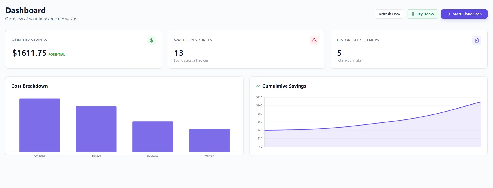
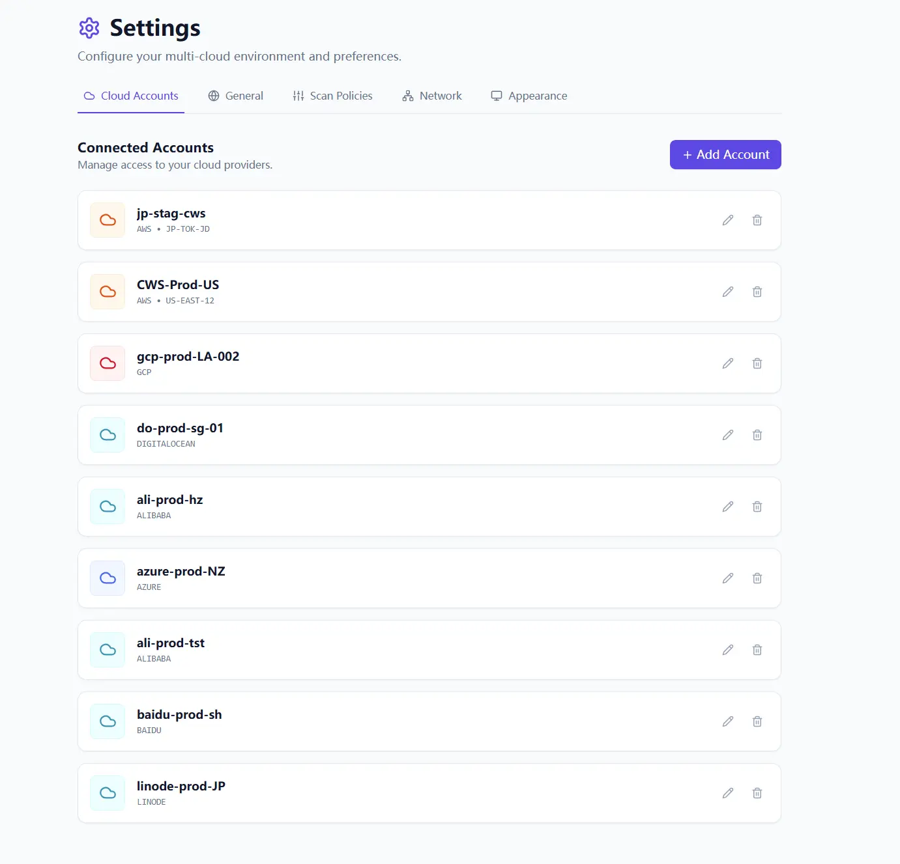
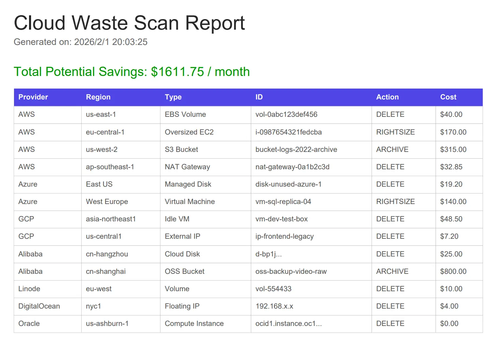

Inside a $50k Cloud Leak: What Shallow Scripts Miss
A postmortem-style walkthrough of the waste patterns that survive ordinary cleanup scripts, and the deeper checks that actually bring them to the surface.
Pattern
Network-layer waste stays hidden longest
NAT gateways and similar artifacts can survive after the workload that justified them is already gone.
Pattern
Attached does not mean useful
Storage can stay expensive while attached to stopped or low-value workloads.
Operating model
Reviewable evidence beats ad hoc scripts
The deeper the waste, the more teams need evidence they can share and approve.
We kept seeing the same pattern in cost review calls: teams removed obvious idle instances, celebrated a small drop, and then watched the next bill climb again.
The reason is usually simple. Most waste lives below the level of shallow scripts. It hides in network artifacts, provisioned storage, and cross-resource relationships that are invisible if the check only asks whether a VM is running or stopped.
Case study 1: the network-layer zombie
A mid-sized SaaS company had a strict Friday cleanup routine for development environments. The instances disappeared on schedule. The bill did not. The missing piece was NAT gateways left behind in multiple regions, still charging hourly and sometimes still processing low-level chatter.
This is the kind of waste shallow cleanup misses because the expensive object is not the instance. It is the network path around the instance.

Case study 2: attached-but-dead storage
Unattached volumes are easy. The harder case is expensive storage that is technically still attached but no longer economically justified. Provisioned IOPS and premium disks can keep billing even when the instance they support is stopped or only used occasionally.
That means the question is not just whether storage is attached. The question is whether the attached workload still deserves that class of storage.
Why shallow checks miss both patterns
Single-resource checks only look at the object in front of them. Real cloud waste often sits in the relationship between objects: the gateway and the empty subnet, the expensive disk and the stopped instance, the load balancer and the service that no longer receives traffic.
Once you accept that, the detection model changes. You stop asking one question per resource and start correlating traffic, state, and billing behavior across resources.

Breadth still matters
There is also a provider reality here. Your main estate may live on AWS, but cost leaks can just as easily sit in a smaller team account on another provider. A meaningful review surface has to cover both the major clouds and the side estates that quietly accumulate spend.

Execution plans close the loop
Deeper findings are only useful if the team can act on them with confidence. That is why execution plans matter. They turn a complicated result set into something reviewable: what will change, what the savings look like, and who can sign off.

To apply this model in daily operations, pair this chapter with The Idle Fallacy for policy design and Local-First FinOps for trust-boundary decisions.
Review hidden waste before the next invoice
Save your first $1,000 before the next billing cycle.